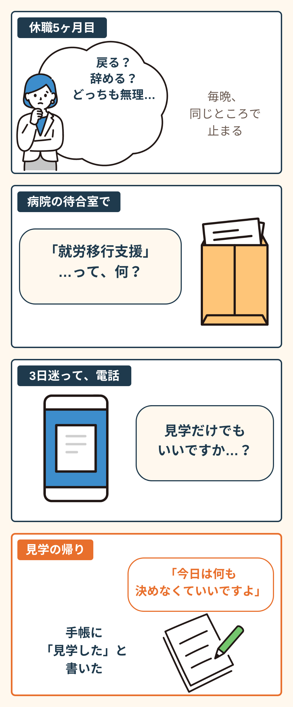
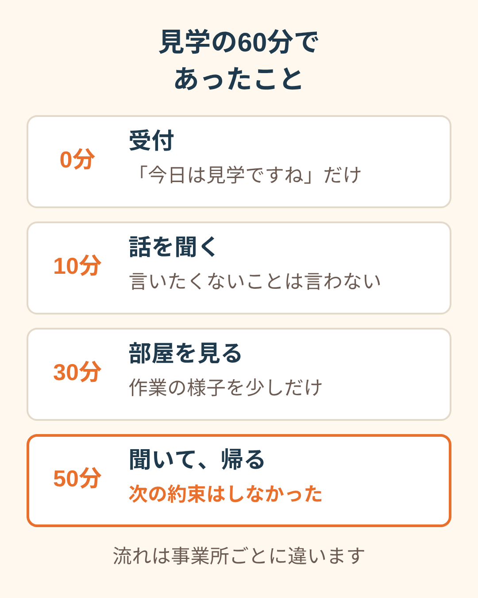
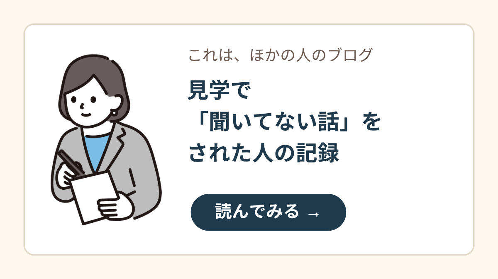
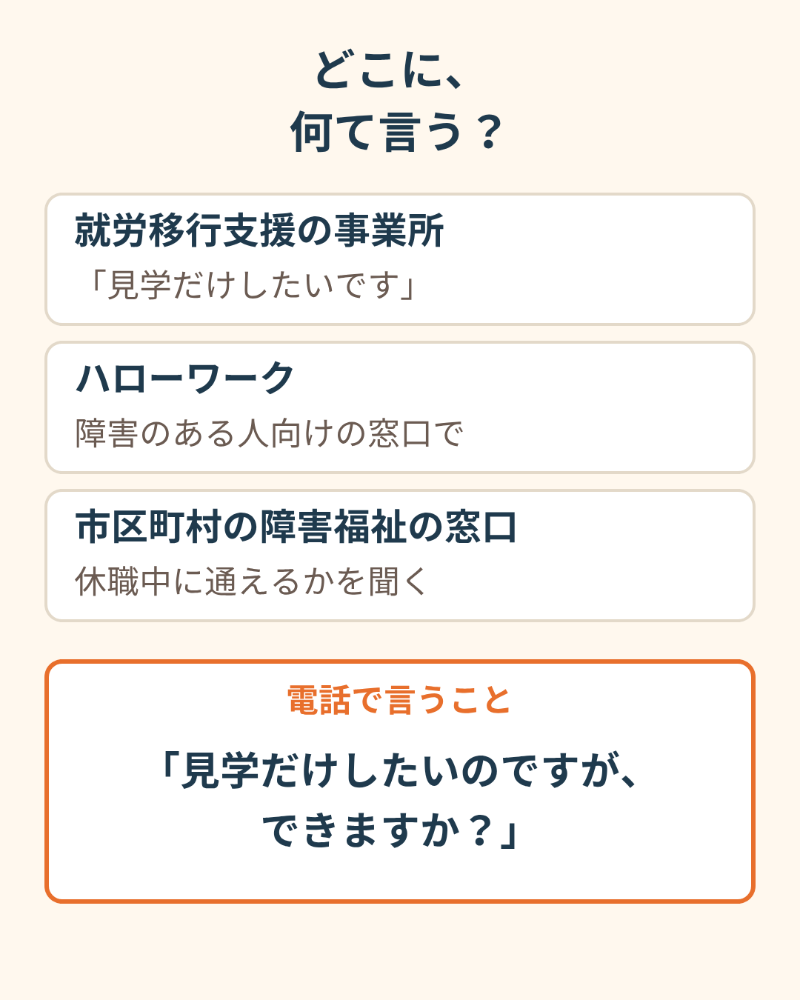
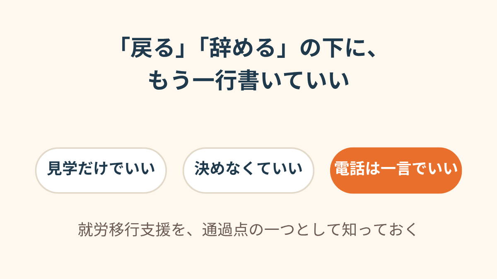

休職して5ヶ月。主治医に「そろそろ、この先のことも考えようか」と言われた日から、毎晩、同じところで止まっていた。
戻る。辞める。
手帳に書いた二つの言葉を、ボールペンで何回もなぞった。戻るのは、正直こわい。でも辞めたら、そのあと何をするのか一つも思いつかない。
待合室のパンフレットと、検索して落ち込んだ夜
38歳、小さな商社の経理。うつ病の診断で休職した。次の診察の日、待合室のラックに、知らない名前のパンフレットが刺さっていた。「就労移行支援」。
読んでも、正直よく分からなかった。分かったのは「働く準備をするところ」くらい。
その夜、布団の中で検索した。体験談をいくつか読んだあと、どこかの掲示板で「一度働いたことがある人が行っても意味ない」という書き込みを見つけて、スマホを伏せた。次の日は一日、何もできなかった。
なのに、パンフレットは捨てられなかった。冷蔵庫の横に、マグネットで留めたまま2週間たった。
「ネットって、行かない理由はいくらでも出てくるんですよ。勧誘がしつこい、意味ない、行くと戻れない。全部読んでから行ったんですけど、実際は、パンフ1枚もらって帰っただけでした。こわがってた時間のほうが長かったです」
電話で最初に言われたこと
電話をかけるまでに、3日かかった。かける前に、言うことをメモ帳に書いた。「休職中で、この先のことを考えています。見学だけしたいのですが」。
出た人は、最初にこう言った。
「今お勤め中の方だと、すぐに通っていただけるかは、お住まいの市区町村の判断になるんです」
やっぱりだめなんだ、と思って、切りかけた。そのあとに、こう続いた。
「でも、見学とお話は大丈夫ですよ。今日、何かを決める必要もないです」
電話を切って、メモ帳の「見学だけ」のところに丸をつけた。
見学の60分で、実際にあったこと
見学の日。駅から歩いて7分の、ふつうのビルの3階だった。看板が小さくて、一回通り過ぎた。

個室で、スタッフの人と向かい合った。最初に言われたのは「今日は何も決めなくていいですよ」だった。
今の状況を聞かれて、病名を言うかどうかで一瞬止まった。「まだ、そこは話せないです」と言ったら、「大丈夫です」とだけ返ってきた。
作業している部屋も、少しだけ見せてもらった。パソコンに向かっている人、スタッフと話している人。思っていたより、ずっと静かだった。「戻れない場所」じゃなくて、「戻るか、別の道か」をゆっくり決める場所なんだ、と思った。
最後に、一つだけ聞いた。「休職中でも、また来ていいですか」。答えは「もちろんです。使えるかどうかは、市役所にも聞いてみてくださいね」。

見学で、思ってもいなかった話をされた人もいる。私とは違う経験だけど、行く前に読んでおいてよかった、と思った記録。

休職・退職を経て就労移行支援に通う人の見学の記録（外部サイト） →帰りの電車で、手帳に書いたこと
帰りの電車で、手帳を開いた。「戻る」「辞める」の下に、小さく「見学した」と書いた。
次の週、市役所の障害福祉の窓口に電話した。休職中に通うには、会社と主治医の書類が要るかもしれない、と言われた。会社に話すのは、まだ無理だと思った。
だから今は、「まだ決めない」を選んでいる。でも、二つの言葉しかなかったページに、三つめの行ができた。それだけで、夜、同じところで止まる時間が、少し短くなった。
「私は結局、会社に戻りました。就労移行支援は使ってないです。でも、見学で『戻ってみて、きつかったらまた相談してください』って言われたのが、お守りみたいになってて。戻ったあとも、逃げ道じゃなくて、相談先が一個あるって思えたのが大きかったです」
今いる場所から、連絡するなら
休職中の人
通えるかどうかは、市区町村で判断が分かれます。ただ、見学と話を聞くことはできるところが多いです。「戻れるか不安」を一人で抱えるより、一度、外の人に話してみるのも一つです。
復職したけど、きつい人
戻ったあとにつまずくのは、珍しいことではありません。今の職場で続ける方法も、別の道も、どちらも話していい場所です。
辞めた・辞めたい人
辞めたあとの「何もしていない時間」がいちばんこわい、という声はよく聞きます。通う場所があるだけで、朝起きる理由が一つできる人もいます。

「就労移行支援」って、結局なに？（知らない言葉が出てきた人へ）
障害や病気のある人が、一般の会社で働くための準備をする福祉サービスです。通いながら、生活リズムを整えたり、パソコンなどの練習をしたり、職場探しや面接の準備をスタッフと一緒に進めます。
原則として65歳未満の人が対象で、利用できる期間は原則2年です。障害者手帳がなくても、医師の意見などで利用できる場合があります。費用は前の年の収入などで決まり、自己負担がない人も多いようです。
会社に戻ることがはっきり目標なら、医療機関などの「リワーク（復職支援）」という選択肢もあります。どれが合うかは人によって違うので、主治医やハローワークにも聞いてみてください（2026年11月時点の情報です）。
制度をもう少しくわしく知りたい人は、就労移行支援の利用条件・期間・選び方の記事もどうぞ。
私は、就労支援の現場で働いています。「もっと早く知りたかった」は、本当によく聞く言葉です。今すぐ使わなくていいので、「そういう場所がある」とだけ、どこかに覚えておいてください。

この記事に、聞いてみたいことはありますか？
「自分の場合はどうなんだろう」と思ったことを、気軽に書いてみてください。いただいた質問は個別にお返事したうえで、匿名で記事にすることがあります。